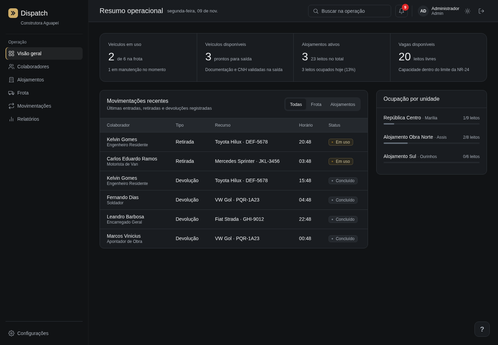

Entender antes de criar.
O problema certo é o ponto de partida de uma boa solução.
Conectamos pessoas, design e desenvolvimento para transformar complexidade em experiências que fazem sentido.
Como tornar o dia a dia mais simples?
É dessa inquietação que nasce o DevCore. Somos sete pessoas com ideias diferentes e uma vontade em comum: desenvolver soluções úteis, claras e bem construídas.
O nosso trabalho une cuidado com a experiência, visão de produto e atenção a cada detalhe. O Dispatch é a primeira expressão dessa forma de pensar.
O problema certo é o ponto de partida de uma boa solução.
Interfaces que organizam o essencial e respeitam quem usa.
Código e colaboração para transformar intenção em produto.
Sua operação.
Finalmente conectada.
Pessoas, alojamentos e frota.
Uma visão completa para decidir
melhor.
Saiba quem está onde, quem está com cada veículo e o que precisa de atenção. Do primeiro registro ao histórico de auditoria, tudo encontra seu lugar.
Abrir demonstração
Cadastros, CNH e movimentações. Informações conectadas a cada colaborador.
Quartos, leitos e estadias. Capacidade acompanhada com as regras da NR-24.
Saídas, retornos e quilometragem. Cada veículo com seu histórico completo.
Relatórios e auditoria com hashes encadeados para conferir cada alteração.
PROJETO ACADÊMICO · Desafio proposto pela Eficaz Marketing. Demonstração em uma construtora fictícia.
O essencial não é ter mais ferramentas.
É ter
as conexões certas.
Do essencial a uma operação mais ampla, conheça as propostas de escopo do Dispatch.
Organização para concentrar o que importa no dia a dia.
Mais contexto para acompanhar, analisar e decidir.
Um ponto de partida para necessidades específicas.
Planos conceituais de apresentação. Valores, disponibilidade, integrações e condições comerciais ainda não definidos. A demonstração reúne os recursos do projeto acadêmico.
Diferentes olhares, aprendizados compartilhados e a vontade de fazer acontecer. Conheça quem transforma o DevCore em movimento.
É o sistema desenvolvido pelo DevCore para conectar colaboradores, alojamentos e frota. O projeto acadêmico usa uma construtora fictícia como cenário de demonstração.
Sim. O botão “Acessar Dispatch” abre a tela de login da aplicação. O acesso depende de uma conta cadastrada no ambiente.
Ainda não. Os planos apresentam possibilidades de escopo. Preços, disponibilidade e condições comerciais serão definidos antes de uma oferta comercial.
O projeto prevê perguntas sobre os dados, resumos e suporte por IA via Groq. A utilização depende de configuração e credenciais. Alertas pelo Telegram também são opcionais.